requires
requires  :
:  ; its current
; its current  has positive density, spin ½ appears automatically, and the non-relativistic limit gives the Pauli equation with
has positive density, spin ½ appears automatically, and the non-relativistic limit gives the Pauli equation with Derivation
Seek
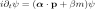
whose square is KG: requires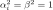
,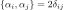
,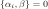
. Smallest solution: . With
. With 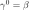
,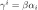
(Dirac 1928):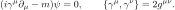
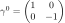
,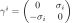
. Notation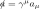
,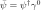
,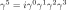
.Current and covariance
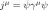
,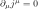
,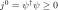
. Under a Lorentz transformation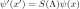
with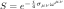
,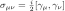
: a rotation by gives
gives 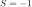
(spinor).Non-relativistic limit and g = 2
With
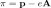
and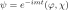
: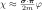
, and using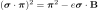
: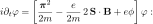
Coulomb problem
Exact levels
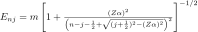
, degenerate in at fixed
at fixed  . For
. For 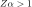
the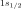
solution breaks down: strong-field QED.Worked example
Free electron at rest:
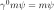
gives 2 positive-energy (upper) and 2 negative-energy (lower) components — spin up/down for particle and antiparticle. Hydrogen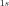
: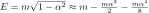
: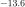
eV and a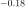
meV relativistic shift.Engineering applications
Spin–orbit coupling in semiconductors (Rashba/Dresselhaus effects for spintronics), relativistic corrections to heavy-atom chemistry (gold's colour, lead–acid battery voltage), Dirac-like electrons in graphene (massless 2D Dirac equation with
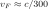
).Pitfall
The Dirac "wave function" cannot be a one-particle state at high energy (Zitterbewegung, Klein paradox): negative-energy solutions are reinterpreted as positrons.